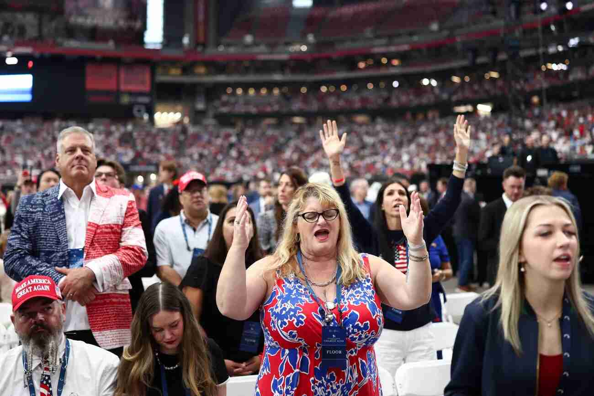
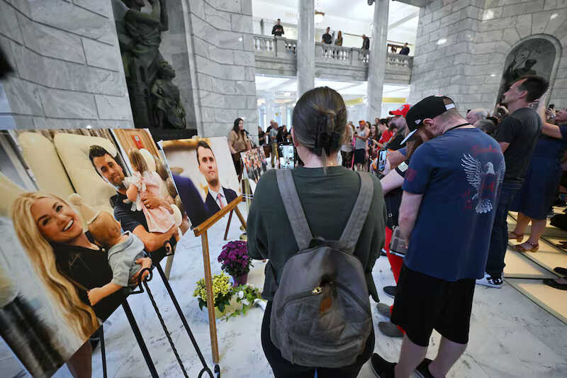
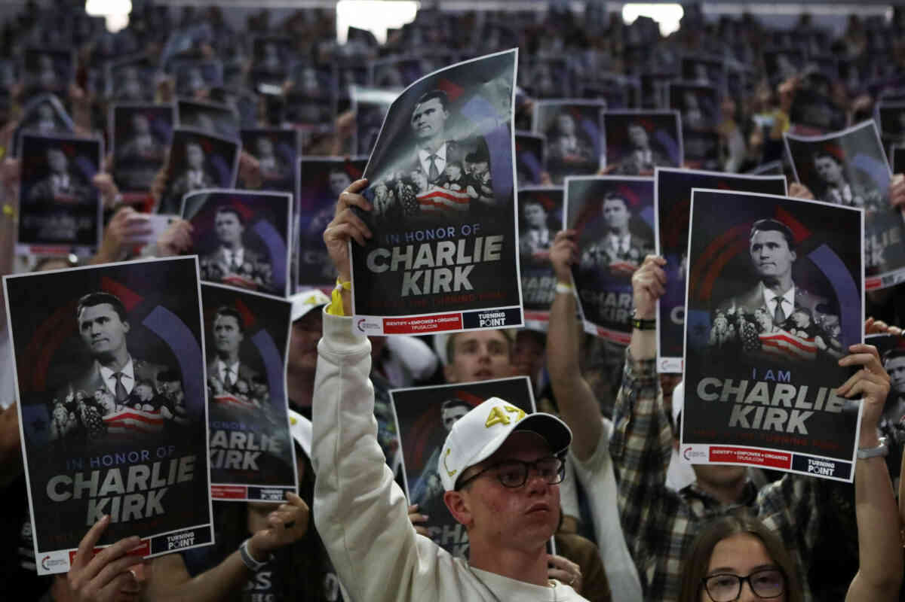
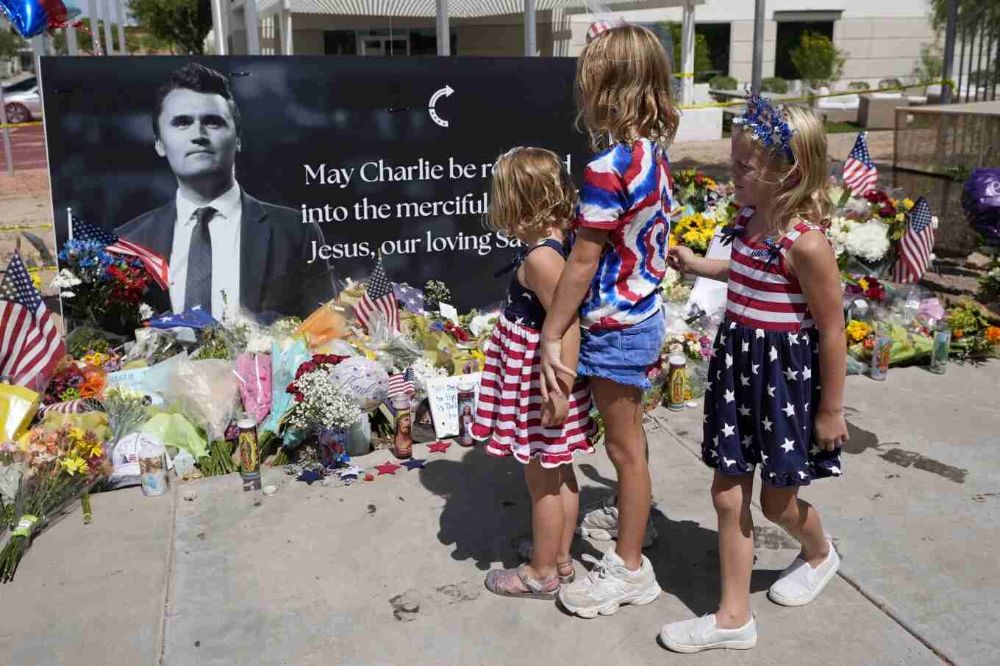

Arizona — Glendale: National Memorial Service

Date: 9/21/25
Time: 12PM
Location: State Farm Stadium, Glendale, AZ
On September 21, 2025, over 90,000 mourners filled State Farm Stadium in
Glendale,
Arizona, for Charlie Kirk's memorial service, with overflow crowds spilling into nearby
Desert
Diamond Arena amid Super Bowl-level security. The event blended heartfelt tributes,
evangelical
hymns like "Amazing Grace" played by bagpipers, and fiery political speeches from figures
including
President Donald Trump, Vice President JD Vance, and Elon Musk, who eulogized Kirk's
conservative,
faith-driven mission through Turning Point USA. Kirk's widow, Erika, delivered
an
emotional address forgiving his accused assassin, Tyler Robinson, while vowing to expand the
organization's campus outreach to "lost young men," turning grief into a rallying cry for
conservative renewal.
Utah — Salt Lake City: Vigil Gathering

Date: 9/12/25
Time: 12PM
Location: Steps of Utah State Capitol, Salt Lake City, UT
Hundreds gathered for a candlelight vigil at the Utah State Capitol steps,
honoring
Kirk's life with prayers, speeches from local leaders, and tributes to his conservative
mission,
held just days after his death to foster community mourning and resolve.
Utah — Logan: Memorial Tour Event

Date: 9/30/25
Time: 6:30PM
Location: Utah State University, Logan, UT
Turning Point USA's memorial tour returned to Utah with thousands filling the
venue
for
speeches by Gov. Spencer Cox, Sen. Mike Lee, and others, celebrating Kirk's legacy in campus
conservatism near the site of his assassination, turning grief into a call to hdanielb
s
memory.
Utah — Orem: University Memorial

Date: 9/17/25
Time: 6PM
Location: Utah Valley University, Orem, UT
A solemn gathering at UVU's UCCU Center featured university officials, religious
leaders, and the Utah Valley Interfaith Choir paying respects to Kirk, emphasizing free
expression
and civil discourse in the wake of the campus tragedy that claimed his life.